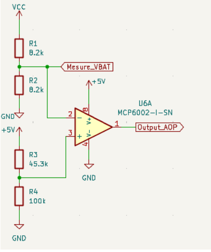
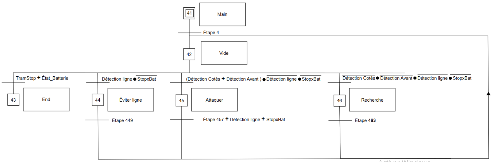
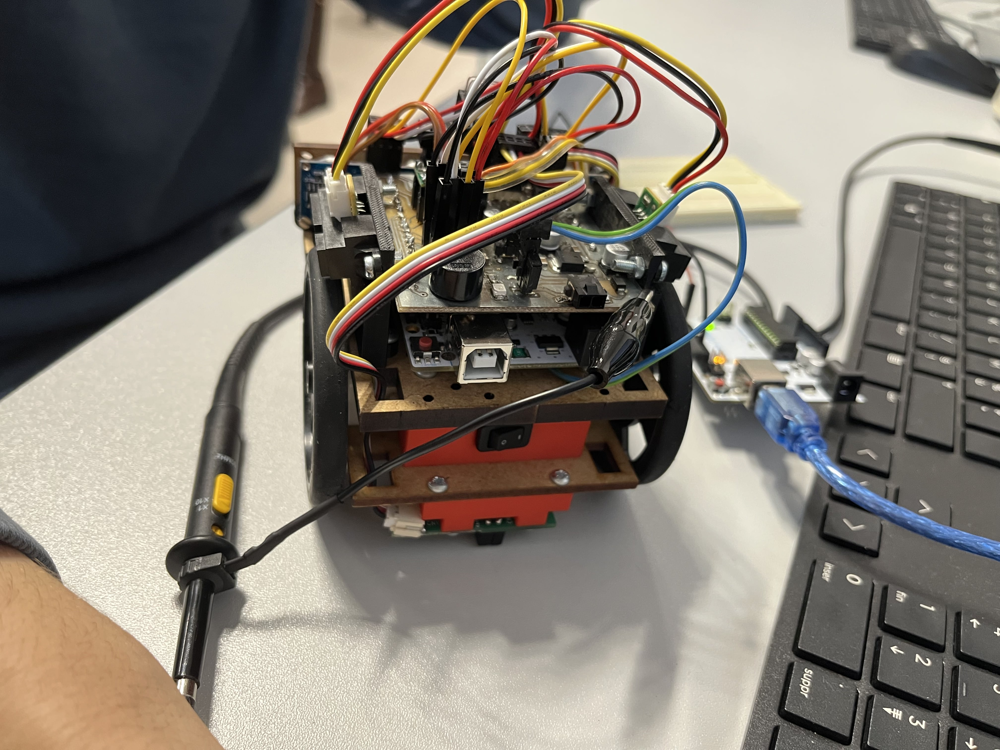

Présentation du Projet
Dans le cadre du BUT GEII, ce projet consistait à développer un robot de combat respectant le règlement technique des mini-sumos à savoir des dimensions maximales de 100x100 mm et un poids inférieur à 500 g. Déposé sur une piste circulaire (dohyo), le robot doit détecter son adversaire et l'éjecter de la surface de jeu. Au sein de mon équipe, je me suis principalement chargé de la gestion énergétique, de la sécurité de la batterie et de la logique de comportement du robot.
Développement du Projet


Phase de Conception
Cette étape formalise les choix techniques et l'architecture logique pour répondre aux exigences du cahier des charges.
Gestion de l'Énergie (EXIG_AUTONOMIE & EXIG_SECUR_BATT)
Le système devait assurer une autonomie minimale de 15 minutes de combat avec une batterie LiPo 2S. Nous avons dimensionné l'accumulateur en sélectionnant une capacité optimale respectant nos contraintes de budget. Pour protéger la batterie contre les décharges profondes, j'ai intégré un pont diviseur de tension analogique chargé de renvoyer l'état de la charge au microcontrôleur pour couper la puissance sous le seuil critique de 6,7 V.
EXIG_COMPORTEMENT
Pour structurer les décisions autonomes du robot, j'ai développé la logique séquentielle sous forme de Grafcet. La détection en continu de la ligne blanche par les capteurs de sol est définie comme une priorité absolue afin d'interrompre immédiatement la traque de l'adversaire et de déclencher une trajectoire d'évitement d'urgence.

Phase d'Intégration Matérielle
Cette étape a consisté à assembler physiquement la structure et à lier les composants au programme. J'ai pris en charge la fixation mécanique des capteurs et des moteurs sur le châssis, ainsi que l'intégralité de leur câblage vers la carte d'extension (shield) connectée à l'Arduino.
En parallèle de l'assemblage, j'ai ajusté le code de l'algorithme pour calibrer précisément les variables de détection et configurer les seuils d'alerte de tension de la batterie, assurant ainsi la bonne communication entre le matériel et le programme.
Phase de Vérification
Les essais permettent de valider la conformité du robot réel face aux exigences initiales.
Validation Énergétique et Sécurité
Comme l'illustre la première vidéo, l'essai de sécurité batterie a été validé en simulant une baisse de charge via une alimentation de laboratoire : les moteurs se coupent instantanément au seuil exact de 6,7 V. L'autonomie globale a été testée par mesures indirectes, confirmant une capacité de décharge conforme à la durée demandée pour un tournoi.
Validation du Comportement
Les essais face à un adversaire ont confirmé la validité de notre logique de Grafcet. Le robot respecte la temporisation réglementaire après le signal de la télécommande, enchaîne ses phases de balayage et enclenche instantanément sa marche arrière de sauvegarde à l'approche de la ligne blanche.
Bilan du Projet
Ce projet a été l'opportunité d'appliquer les compétences majeures de ma formation. J'ai validé ma capacité à identifier une exigence client et à y associer une solution technique pertinente lors de l'étude fonctionnelle du système. J'ai également mis en œuvre une démarche de prototypage rapide pour tester le fonctionnement du bloc de sécurité coupant l'alimentation sous les 6,7 V, avant de contribuer à la rédaction du dossier technique formalisant notre conception. Enfin, j'ai pris en charge la vérification de la conformité du système en appliquant des protocoles d'essais méthodiques face au cahier des charges.
Côté technique, j'ai consolidé ma pratique du codage embarqué pour programmer et débugger la logique séquentielle du Grafcet sur le framework Arduino en langage C/C++. J'ai également utilisé le logiciel KiCad pour concevoir le schéma électrique, en y plaçant les différents composants du pont diviseur avec leurs valeurs exactes et en réalisant toutes leurs interconnexions. Ce travail s'est complété par une phase d'intégration matérielle, où j'ai géré la fixation mécanique des capteurs sur la structure ainsi que l'ensemble de leur câblage vers le shield.